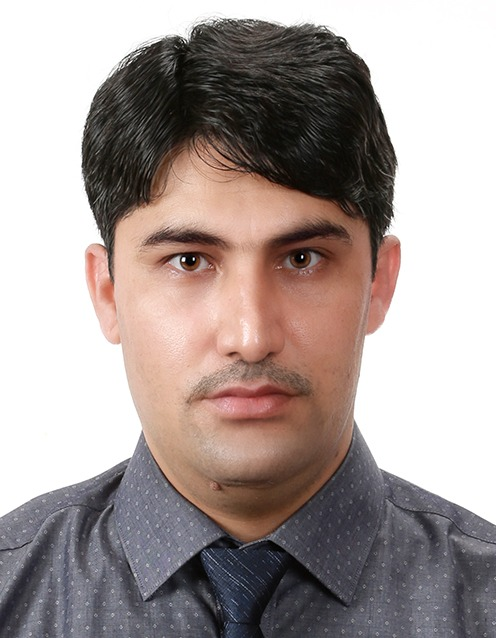

Research Scientist | Deep Learning Specialist

My research interests revolve around audio, video, and Speech Signal Processing. My Ph.D. thesis focused on human emotion recognition using Deep Learning techniques. I have designed various Machine/Deep Learning models, including CNNs, sequential networks, and multimodal approaches for applications such as emotion recognition, action recognition, and forecasting.
This project focuses on intelligent object detection, scene dynamics understanding, and activity recognition for UAVs in real-time dynamic environments. The work enhances autonomous navigation and surveillance systems.
Leveraging deep learning on time-series data for energy analytics to improve forecasting, optimize resource allocation, and enhance system efficiency for sustainable energy management.
Feel free to reach out via email at mustaqeem.khan@example.com.